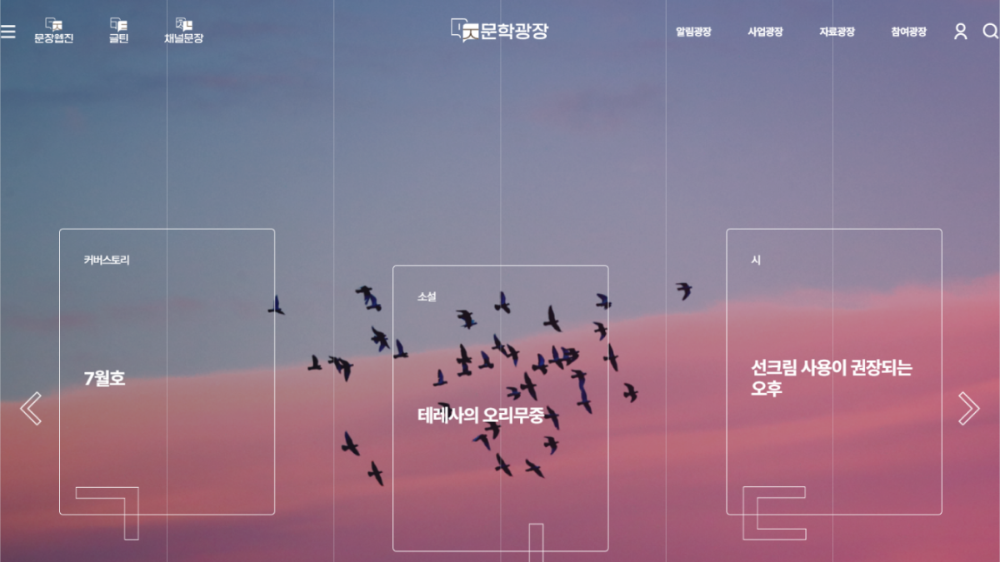
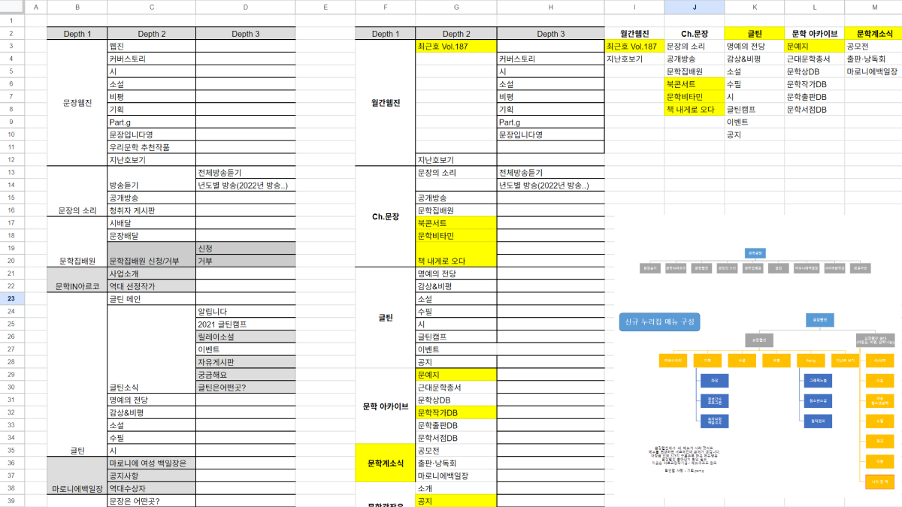
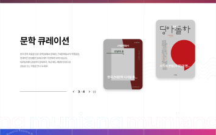
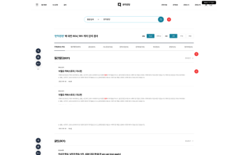
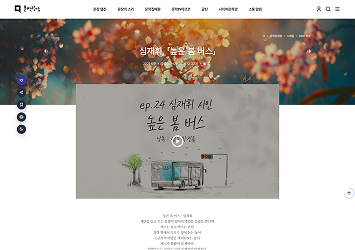
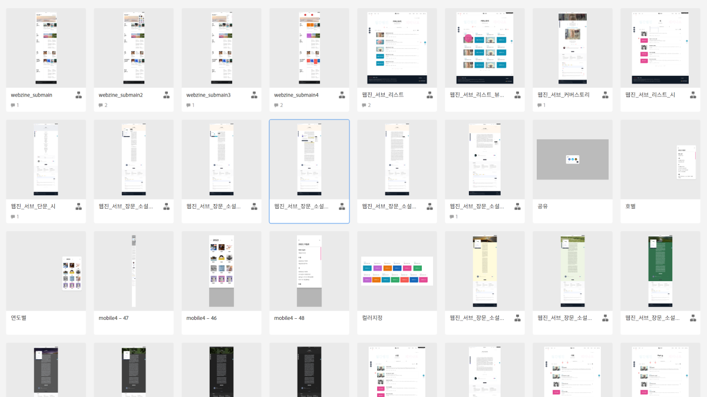

01
기관 중심 UI
사용자의 탐색 목적보다 기관의 운영 구조가 먼저 노출되었습니다.
UX Case Study · 04
사이버문학광장
Rebuilding a Content Platform around Discovery, Reading and Participation
문학을 보여주는 플랫폼이 아니라, 문학을 발견하고 읽고 참여하게 만드는 콘텐츠 경험을 설계했습니다.

01 / Problem
콘텐츠의 문제를 해결한 것이 아니라, 콘텐츠의 가치를 발견하고 읽고 참여할 수 있도록 플랫폼 경험을 다시 설계했습니다.
01
사용자의 탐색 목적보다 기관의 운영 구조가 먼저 노출되었습니다.
02
좋은 콘텐츠가 메뉴 깊숙이 숨어 있어 사용자가 문학 콘텐츠를 자연스럽게 발견하기 어려웠습니다.
03
콘텐츠보다 주변 요소가 크게 보여 읽기 경험에 집중하기 어려웠습니다.
Content Audit Summary
02 / Domain Understanding
문학 콘텐츠의 가치, 기관의 운영 구조, 사용자의 탐색 흐름을 함께 이해하고 콘텐츠 플랫폼 경험의 방향을 정리했습니다.
기관
기관의 공공성과 문학 진흥 목적을 서비스 구조에 반영했습니다.
사용자
작품을 발견하고 읽고 참여하는 서로 다른 이용 목적을 함께 고려했습니다.
운영
콘텐츠 발행과 아카이브, 프로그램 운영이 지속될 수 있는 구조를 정의했습니다.
03 / Stakeholder & Requirements
운영자와 사용자의 요구를 수집한 뒤 화면 단위 요청이 아니라 서비스 목적, 콘텐츠 흐름, 우선순위 기준으로 재구성했습니다.
04 / Content Audit
기존 IA와 콘텐츠 패턴을 하나의 분석 프레임으로 정리했습니다. 메뉴 구조, 콘텐츠 유형, UI 패턴, 공통 기능, 내비게이션, 검색 구조를 함께 분석해 콘텐츠 플랫폼으로서의 재구성 방향을 도출했습니다.
01
메뉴 깊이 · 중복 카테고리
02
장르 · 포맷 · 발행 주기
03
목록 · 카드 · 상세 구조
04
공통 기능 · 반복 요소
05
진입 경로 · 이동 맥락
06
검색 조건 · 결과 구조
05 / Information Architecture
기존 메뉴 구조의 중복과 깊이를 줄이고, 콘텐츠 유형과 사용자 목적에 따라 정보 구조를 재정의했습니다. 기관 중심의 분류보다 사용자가 무엇을 찾고, 어떤 흐름으로 읽고 참여하는지를 기준으로 IA를 구성했습니다.

01
추천, 큐레이션, 신규 콘텐츠를 통해 사용자가 처음 진입할 수 있는 구조
02
장르, 주제, 작가, 프로그램 등 다양한 탐색 기준 제공
03
공모, 교육, 행사, 참여형 콘텐츠로 이어지는 행동 흐름
01
Discover
02
Read
03
Participate
04
ARCHIVE
06 / Product Strategy
원칙은 미학적 취향이 아니라, 콘텐츠를 발견하고 읽게 만드는 판단 기준이었습니다.
01
정보에 빠르게 도달할 수 있는 단순한 구조
02
설명 없이도 이해할 수 있는 탐색 방식
03
추천·큐레이션·쉬운 언어로 읽고 싶은 이유를 제시
04
광고성 요소를 줄이고 콘텐츠 경험에 집중
07 / Content Strategy
01
Discover
새롭게 발견하기
추천·큐레이션·검색
02
Read
몰입해 읽기
상세·연재·관련 작품
03
Participate
직접 참여하기
응모·댓글·창작 활동
04
Archive
축적된 콘텐츠의 재발견
저장·기록·재탐색
08 / Design Decisions
화면 디자인은 단순한 시각 개선이 아니라, 발견성, 탐색성, 읽기 몰입이라는 설계 가설을 검증하는 근거로 사용했습니다.

01 Discovery
큐레이션 영역과 가독성 높은 에디토리얼 레이아웃을 설계해 사용자가 콘텐츠를 자연스럽게 발견하도록 구성했습니다.

02 Search
키워드, 조건, 자연스러운 작품 탐색 흐름을 통해 사용자가 원하는 콘텐츠로 이동할 수 있도록 설계했습니다.

03 Reading
본문 읽기 경험을 우선하고 주변 요소를 정리해 작품에 집중할 수 있는 화면을 구성했습니다.
09 / Prototype
Adobe XD 기반의 핵심 흐름 프로토타입을 제작해 운영 관점과 사용자 경험 관점의 피드백을 수렴했습니다. 프로토타입은 최종 화면을 확정하기 위한 결과물이 아니라, 요구사항과 콘텐츠 흐름을 검증하기 위한 커뮤니케이션 도구로 활용했습니다.
01
핵심 흐름 구현
02
운영 관점 검토
03
요구사항과 흐름 조정
04
설계 기준 합의

10 / Design System
화면의 통일보다는 콘텐츠를 읽는 방식의 일관성을 만들었습니다. 콘텐츠 유형이 달라도 사용자가 예측 가능한 방식으로 탐색하고 읽고 참여할 수 있도록 Typography, Color, Card Pattern, Component 기준을 정리했습니다.
01
제목·본문·메타정보의 읽기 위계
02
콘텐츠와 행동을 구분하는 명확한 대비
03
콘텐츠 유형이 달라도 예측 가능한 구조
04
탭, 버튼 등 반복 요소의 인터랙션 상태 관리와 일관성 확보
11 / My Role
01
발주처와 운영자의 목표 및 요구사항을 정리했습니다.
02
요구사항을 사용자와 콘텐츠 관점의 기준으로 재구성했습니다.
03
기존 IA, 콘텐츠 유형, UI 패턴, 공통 기능과 검색 구조를 분석했습니다.
04
사용자의 발견, 읽기, 참여 흐름을 기준으로 정보구조를 재설계했습니다.
05
제품 원칙과 콘텐츠 경험의 핵심 행동 흐름을 정의했습니다.
06
메인, 목록, 검색, 상세, 참여 화면의 UI를 설계했습니다.
07
Adobe XD로 핵심 흐름을 구현하고 피드백을 반영했습니다.
08
설계 의도와 구현 결과의 정합성을 확인했습니다.
12 / Impact
01
중복과 깊이를 줄여 사용자 목적 중심으로 정보구조를 정리했습니다.
02
큐레이션과 진입 구조를 통해 숨겨진 콘텐츠를 발견할 수 있게 했습니다.
03
복잡한 메뉴 깊이를 정리하고 예측 가능한 탐색 구조를 마련했습니다.
04
서비스 전반에 적용 가능한 이동 원칙과 현재 위치 기준을 정리했습니다.
05
발견, 읽기, 참여, 아카이브로 이어지는 공통 경험 기준을 남겼습니다.
기관 중심의 정보 제공 구조를 사용자 중심의 콘텐츠 플랫폼 구조로 전환했습니다.
콘텐츠 유형과 탐색 목적을 기준으로 IA와 화면 패턴을 재정의해, 사용자가 문학을 발견하고 읽고 참여하는 경험을 만들었습니다.
13 / Key Learnings
01
콘텐츠 플랫폼은 메뉴보다 발견성이 먼저 설계되어야 한다.
02
요구사항보다 사용자의 목적이 IA의 기준이 되어야 한다.
03
검색은 기능이 아니라 콘텐츠 경험이다.
04
도메인을 먼저 이해해야 사용자와 고객의 관점을 함께 설계할 수 있다.